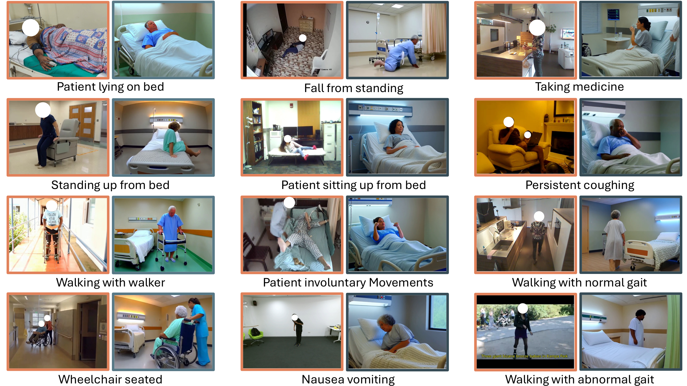

Preprint - arXiv

AI-driven patient care has significant potential to improve hospital safety by detecting hazardous behaviors and continuously monitoring patient activities, especially in the absence of clinical staff, while also reducing operational costs and manual workload. However, progress in this area remains limited due to the lack of diverse, well-annotated datasets capturing a broad spectrum of clinically relevant actions. This gap is largely driven by privacy constraints in real-world hospital care and strict government regulations. Existing action recognition datasets are inadequate for this purpose, as they are typically collected in non-clinical environments and fail to capture fine-grained patient-care activities, e.g. falling on the ground, tampering with IV lines, walking with a walker etc. We introduce PatientCare, a diverse dataset, with synthetic and real videos, specifically designed for patient monitoring in the hospital domain. PatientCare focuses on clinically meaningful activities and follows the World Health Organization patient care framework, defining 23 fine-grained action classes. Unlike prior datasets, it emphasizes clinically relevant scenarios, enabling more precise evaluation of action recognition models in patient-care contexts. To demonstrate the utility of PatientCare, we also establish a realistic video benchmark for hospital-based action recognition and evaluate state-of-the-art action recognition models. Our results highlight both the inherent challenges of fine-grained patient monitoring and the effectiveness of synthetic data in addressing existing limitations. We will release the dataset, benchmarks, and code to facilitate further research in clinically relevant action understanding.